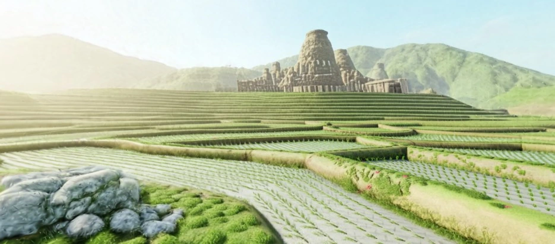

从一张图到一个三维场景
这套流程分为三步：先统一场景画风，再把图片扩展成全景，最后结合场景描述生成三维世界。前一步的输出，就是后一步的输入。
输入是一张二维图片；最终得到可以从不同视角浏览的三维场景。
工作流一 · 风格重绘
从实景或参考图出发，在保留场景结构的同时统一建筑、植被和光影的表现，得到下一步使用的风格化场景图片。
- 输入
- 实景或参考图片
- 处理
- 图像预处理、提示词、LoRA 与 ControlNet 约束、分段采样
- 输出
- 风格化场景图，交给工作流二
场地与画风参考


工作流二 · 图生全景
接收工作流一的场景图，用 Flux-Kontext 延展视野，保持原有画风，生成供下一步理解和建模的 2:1 全景图片。
- 输入
- 工作流一输出的场景图
- 处理
- 参考图引导、全景扩展与高清放大
- 输出
- 2:1 全景图，示例结果为 6144 × 3072
原始全景生成记录

工作流三 · 场景理解与三维生成
用 Janus-Pro 读取全景图，生成场景描述；再把全景图和这段描述一起输入 Marble，生成可探索的高斯泼溅三维场景。
- 输入
- 工作流二输出的全景图
- 处理
- Janus-Pro 反推描述 → Marble 生成场景
- 输出
- 可从不同视角浏览的三维场景
从描述到三维场景
2:1 全景图场景描述
Marble三维场景原始输入与场景记录


一张图片，最终成为可探索的场景
风格重绘确定画面，全景扩展补充视野，场景理解为三维生成提供描述。三段流程串起来，将一张二维图片转化为可以从不同视角浏览的三维场景。

- 中间产物
- 风格化图片、2:1 全景图片、场景描述
- 最终产物
- Marble 高斯泼溅三维场景
- 网页呈现
- 将场景数据转换为 PLY 点云，得到页首可旋转、缩放的粒子场景
完整流程与场景结果记录